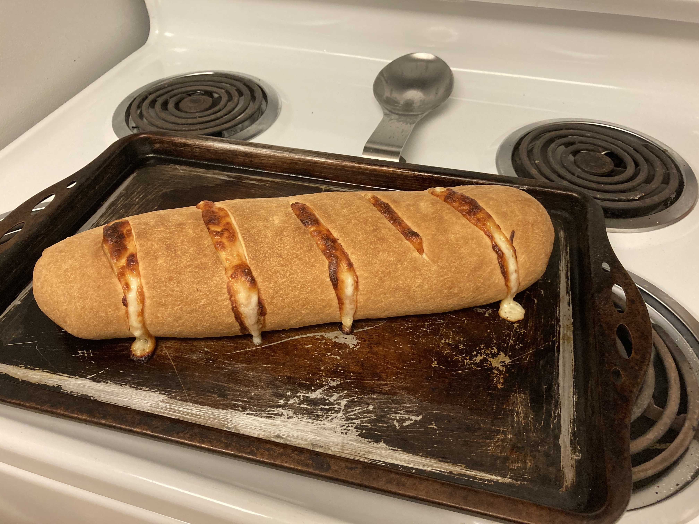

60 Minute Calzone Dough
This recipe will give you calzone dough that is crunchy on the outside, soft and chewy on the inside, and will soften over time as the calzone cools down.
Ingredients:
- 3/4 tsp yeast
- 3 cups of flour
- 1 1/4 cups warm water
- 1 tsp kosher salt
Instructions
- Add flour, salt, and yeast to a large mixing bowl and combine
- Pour water into the bowl
- Hand mix until the ingredients combine and create a sticky ball
- Knead the doough for 1-2 minutes until it is full combined and no longer sticky to the touch
- Let rest in a covered bowl for 20 minutes
- Remove from bowl and knead gently until the outside is soft and slightly shiny
- Place back in the bowl and wait 30 minutes
- Remove from bowl and prepare for baking
That's it. Your all set and ready to bake
